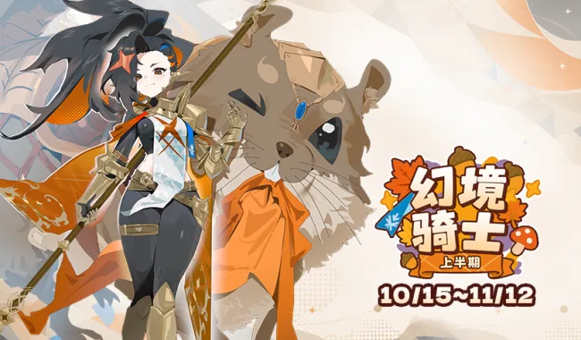

版本与公告官方原文 ↗
官方公告/218
S9-幻境骑士（上半期） 发布ID：218 “欢迎来到吉星派对” 活动时间 2026年10月15日(版本更新后)-2026年11月12日09:59(UTC+8) 活动内容 完成活动任务可获得萤火虫雪花球，使用萤火虫雪花球在对…
S9-幻境骑士（上半期） 发布ID：218 “欢迎来到吉星派对” 活动时间 2026年10月15日(版本更新后)-2026年11月12日09:59(UTC+8) 活动内容 完成活动任务可获得萤火虫雪花球，使用萤火虫雪花球在对应的卡池中抽取大奖皮肤仓栗骑士-琉华。 祝您游戏愉快，今后也请多多支持《吉星派对》 《吉星派对》运营团队